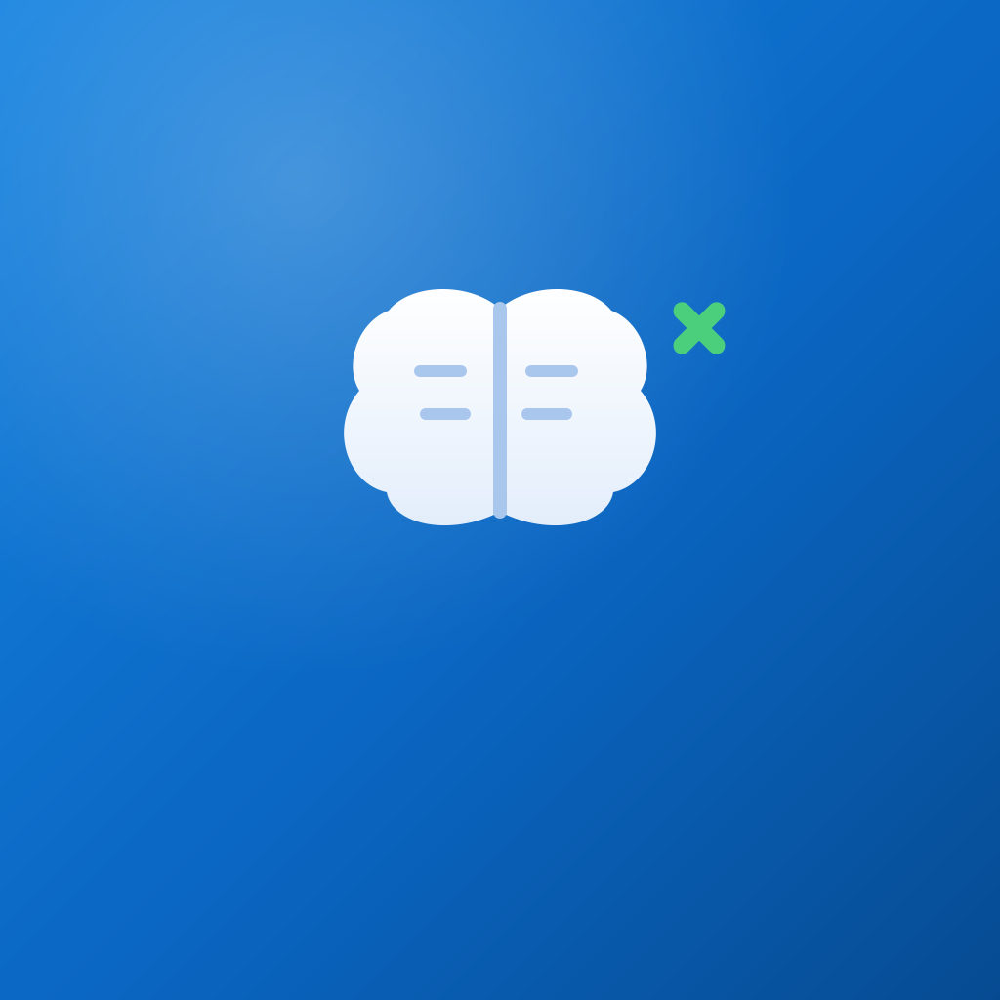

基于 refactor/function-spec.md 核心功能/旅程设计，每枚代表一个产品语义；统一品牌蓝渐变底便于公平对比。 小尺寸按系统实际渲染（60/40/20 pt @3x），并附 ×3 放大。讨论版，非最终。
白盾 + 医疗十字 = 「个人医疗信息保险箱」。安全感最强，健康类 App 里几乎没有盾形，辨识度高。
实际尺寸：60pt40pt20pt
放大 3× 查看：60pt×340pt×320pt×3
药囊 + 绿色对勾 = 「按时吃药、如实记录」（旅程 B 慢病用药，最高价值）。成功绿呼应语义色。
白色病历文档 + 蓝色心电趋势线 = 「以人为中心的连续健康档案」。

白色大脑 + 绿色星芒 = 「可追溯的 AI 辅助理解」。呼应 app 内 AI 插画的双脑/绿色 AI 徽标。
双人剪影 + 青囊十字 = 「家庭成员档案」。直击家庭医疗记录定位。
心脏 + 医疗十字 = 「关键时刻救命的紧急信息卡」。最戳情感。